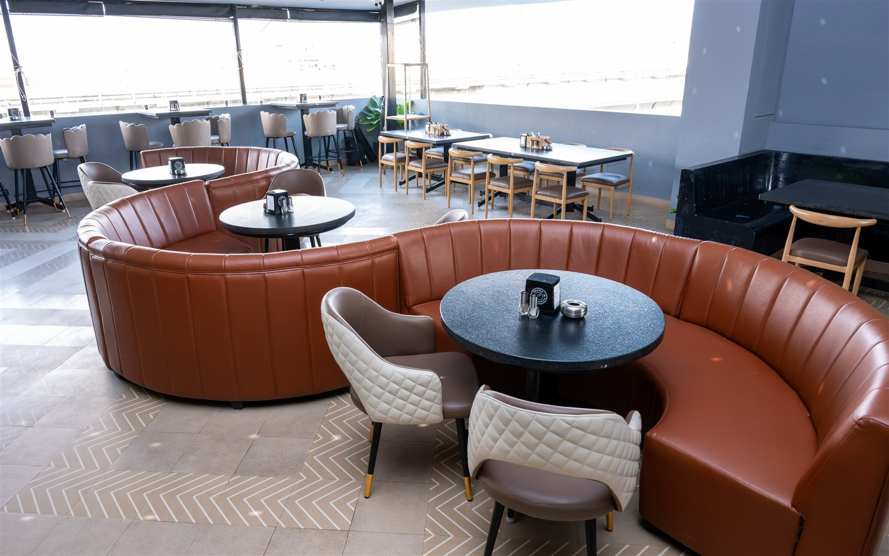

THE GALLERY / A FEEL FOR THE EVENING
Set the mood.
Make the memory.
Warm lights, full tables, and something good in your glass.
GUEST MEMORIES
Your nights.
Our favourite photos.
Had a good time at Nasha? Share a photo from your evening. Once the team has had a look, it joins the wall.
No guest photos yet. Be the first to share yours.
A TABLE. YOUR PEOPLE. A GOOD TIME.